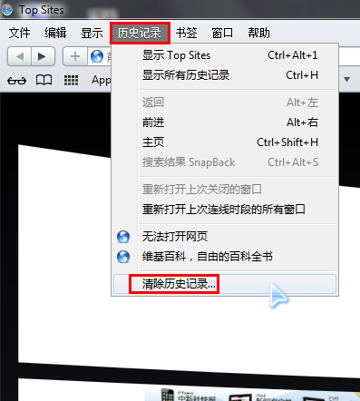
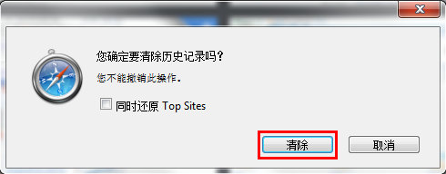

清除浏览器缓存
IE7、8、9（本文以IE8为例）
开始------在IE图标上右键--------internet属性，弹出属性对话框
点击“删除”按键
选择要删除的项目，点击“删除”即可。
菜单栏 历史记录-------清除最近历史记录
弹出历史记录,点击 "清除最近的历史记录..."或者使用Ctrl+Shift+Del快捷键
选择要删除的内容，选择历史记录的时间，单击“立即清除”即可。
右侧“扳手”图标-------工具-------清除浏览数据
选择要删除的内容，选择历史记录的时间，单击“清除浏览数据”即可。
点击右侧齿轮状图标-------清除浏览记录
选择要删除的内容，选择历史记录的时间，单击“清除”即可。
点击右上角工具栏图标-------设置
进入设置界面，点击历史记录
进入历史记录界面后，点击清除浏览数据
选择要删除的内容，选择历史记录的时间，单击“清除浏览数据”即可。
点击右侧齿轮状图标--------勾选显示菜单栏
菜单栏 编辑-------清空缓存
弹出确认对话框，点击“清空”。
菜单栏 历史记录------清除历史记录
弹出对话框，点击“清除”。


工具栏 菜单-------设置--------删除私人数据
弹出对话框，点击“详细选项”
选择你要删除的内容，单击“删除”即可